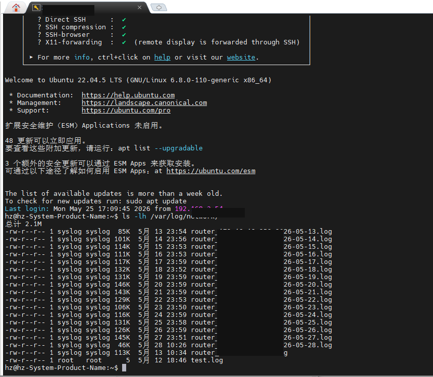
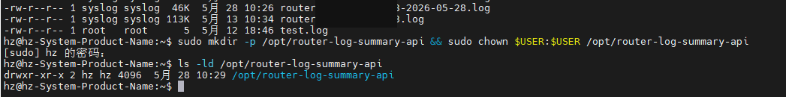
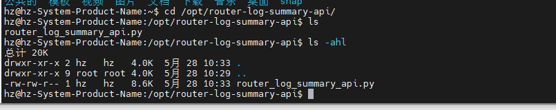
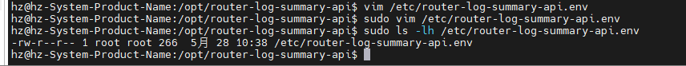
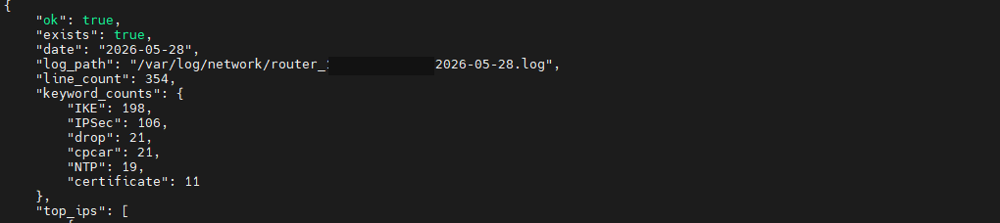
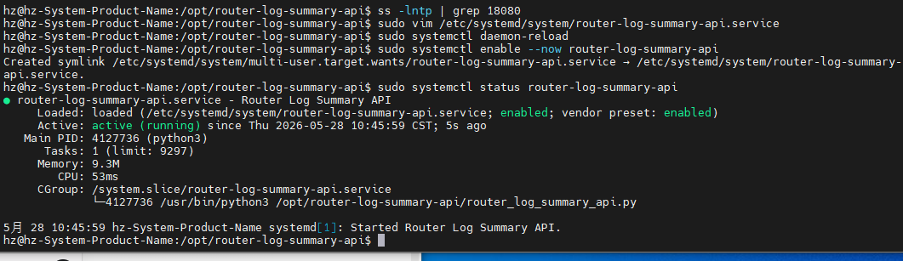
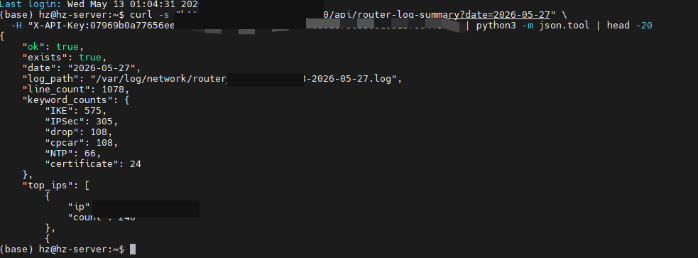
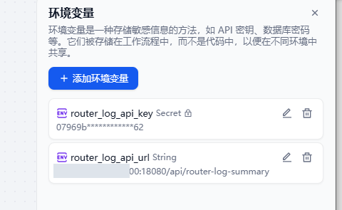

原始文档展示
Dify 路由日志每日分析和钉钉推送操作说明
第5步：Dify 路由日志每日分析与钉钉推送操作说明
项目：Zabbix 路由器日志采集 + Dify AI 分析 + 钉钉个人推送
目标：Dify 每天自动拉取 Zabbix 服务器上一天的路由器 Syslog 摘要，生成 AI 分析报告，并推送到钉钉。
说明：本文档基于当前目录中的“新建 Microsoft Word 文档.docx”截图整理，截图按原文档中的图片顺序插入。
安全边界：本流程只读取日志、生成摘要和推送报告，不自动执行重启、删除、封禁、修改路由器配置、防火墙、安全组或数据库等动作。
一、实施架构
出口路由器 Syslog
-> Zabbix 服务器 /var/log/network/router_[ROUTER_IP]-YYYY-MM-DD.log
-> 只读日志摘要接口 http://[ZABBIX_SERVER_IP]:18080/api/router-log-summary
-> Dify 定时触发并拉取昨天日志摘要
-> 大模型生成路由日志分析报告
-> 钉钉个人消息推送
二、Zabbix 服务器侧操作
1. 确认日志文件已按日期生成
ls -lh /var/log/network/- 成功标准：能看到 router_[ROUTER_IP]-YYYY-MM-DD.log，且每天有新日志。
2. 创建接口脚本目录
sudo mkdir -p /opt/router-log-summary-api && sudo chown $USER:$USER /opt/router-log-summary-apils -ld /opt/router-log-summary-api- 成功标准：目录存在，属主为当前运维用户。
3. 上传只读接口脚本
cd /opt/router-log-summary-api/ls -ahl- 成功标准：能看到 router_log_summary_api.py。
4. 创建接口配置文件
python3 -c 'import secrets; print(secrets.token_hex(32))'sudo vim /etc/router-log-summary-api.envROUTER_LOG_API_KEY=填写生成的随机字符串ROUTER_LOG_HOST=0.0.0.0ROUTER_LOG_PORT=18080ROUTER_LOG_DIR=/var/log/networkROUTER_LOG_PREFIX=router_[ROUTER_IP]ROUTER_LOG_SAMPLE_LIMIT_PER_KEYWORD=3ROUTER_LOG_TOP_IP_LIMIT=10- 注意：API Key 不写入文档，不截图外发。
5. 临时启动接口并验证读取
sudo env $(sudo cat /etc/router-log-summary-api.env | xargs) python3 /opt/router-log-summary-api/router_log_summary_api.py- 成功标准：出现 Router log summary API listening on http://0.0.0.0:18080。
curl -s "http://127.0.0.1:18080/api/router-log-summary?date=2026-05-27" \-H "X-API-Key: <你的APIKEY>" | python3 -m json.tool | head -20
6. 创建 systemd 服务并设置开机自启
sudo vim /etc/systemd/system/router-log-summary-api.servicesudo systemctl daemon-reloadsudo systemctl enable --now router-log-summary-apisudo systemctl status router-log-summary-api- 成功标准：服务状态为 active (running)，并显示 enabled。
7. 服务模式下验证昨天日志
read -s ROUTER_KEYcurl -s "http://127.0.0.1:18080/api/router-log-summary?date=2026-05-27" \-H "X-API-Key: $ROUTER_KEY" | python3 -m json.tool | head -20
- 成功标准：ok=true、exists=true、line_count 大于 0，keyword_counts 有统计。
三、Dify 应用侧操作
8. 新建 Dify Workflow 应用
应用名称：router_syslog_daily_analysis。
- 不要导入旧 DSL，不混入原来的 24 小时设备分析应用。
9. 配置 Dify 环境变量
router_log_api_url = http://[ZABBIX_SERVER_IP]:18080/api/router-log-summary
router_log_api_key = Zabbix 服务器接口 API Key，类型选择 Secret
dingtalk_app_key = 钉钉应用 AppKey，类型选择 Secret
dingtalk_app_secret = 钉钉应用 AppSecret，类型选择 Secret
dingtalk_userid_list = 钉钉接收人 userid，类型选择 String
10. 配置定时触发器
每天 08:40
时区：Asia/Shanghai / UTC+8
11. 配置代码节点：计算昨天日期
from datetime import datetime, timedelta, timezone
def main() -> dict:tz = timezone(timedelta(hours=8))
yesterday = datetime.now(tz) - timedelta(days=1)
return {"log_date": yesterday.strftime("%Y-%m-%d")
}
- 输出变量：log_date。
12. 配置 HTTP 节点：拉取路由日志摘要
请求方式：GET
URL：{{#env.router_log_api_url#}}
PARAMS：
date = 选择变量 -> 计算昨天日期 -> log_date
HEADERS：
X-API-Key = {{#env.router_log_api_key#}}
Content-Type = application/json
BODY：none
13. 配置大模型节点：生成路由日志分析报告
- SYSTEM 放角色、安全边界、重点识别事件。
- USER 放 HTTP 返回正文和输出格式。
- ASSISTANT 留空。
重点识别事件：
- IKE / IKE_NEGO_FAIL
- IPSec / failed to decrypt
- NTP / NTP packet
- certificate / cert
- drop / deny
- attack / abnormal / flood
- cpcar
- storm / broadcast
- loop / flapping
14. 配置输出节点和钉钉推送节点
输出节点：
report = LLM生成路由日志分析报告.text
发送钉钉消息节点：
title = 出口路由器日志日报
summary = LLM生成路由日志分析报告.text
dingtalk_app_key = {{#env.dingtalk_app_key#}}
dingtalk_app_secret = {{#env.dingtalk_app_secret#}}
dingtalk_userid_list = {{#env.dingtalk_userid_list#}}
四、截图记录
截图 1：确认路由日志按日期落盘
在 Zabbix 服务器执行 ls -lh /var/log/network/，确认 router_[ROUTER_IP]-YYYY-MM-DD.log 已持续生成。

截图 2：创建只读接口脚本目录
创建 /opt/router-log-summary-api，并把目录属主调整为当前运维用户，方便上传接口脚本。

截图 3：上传接口脚本
将 router_log_summary_api.py 上传到 /opt/router-log-summary-api/，确认脚本文件已存在。

截图 4：创建接口环境配置
创建 /etc/router-log-summary-api.env，保存 API Key、监听端口、日志目录和日志文件前缀。

截图 5：验证接口能读取日志
使用 curl 调用本机 18080 接口，确认返回 ok、date、line_count、keyword_counts 等字段。

截图 6：配置 systemd 后台服务
创建 router-log-summary-api.service，启动并设置开机自启，确认 active (running)。

截图 7：验证昨天整天日志
按正式日报口径读取 2026-05-27 日志，确认 IKE、IPSec、drop、cpcar、NTP、certificate 等统计正常。

截图 8：配置 Dify 环境变量
在 Dify 应用中配置 router_log_api_url 和 router_log_api_key，其中 API Key 使用 Secret 类型。

截图 9：配置 Dify 定时触发器
配置每天 08:40、UTC+8 定时触发，和原 24 小时分析应用错开运行。
五、当前验收结论
- Zabbix 服务器只读日志摘要接口已部署，并能读取昨天日志。
- Dify Workflow 已能主动拉取路由日志摘要。
- AI 报告已生成，包含关键事件统计、风险判断、处理建议和人工确认事项。
- 钉钉个人推送节点已运行成功。
- 后续自然验证点：等待次日 08:40 定时任务自动推送。